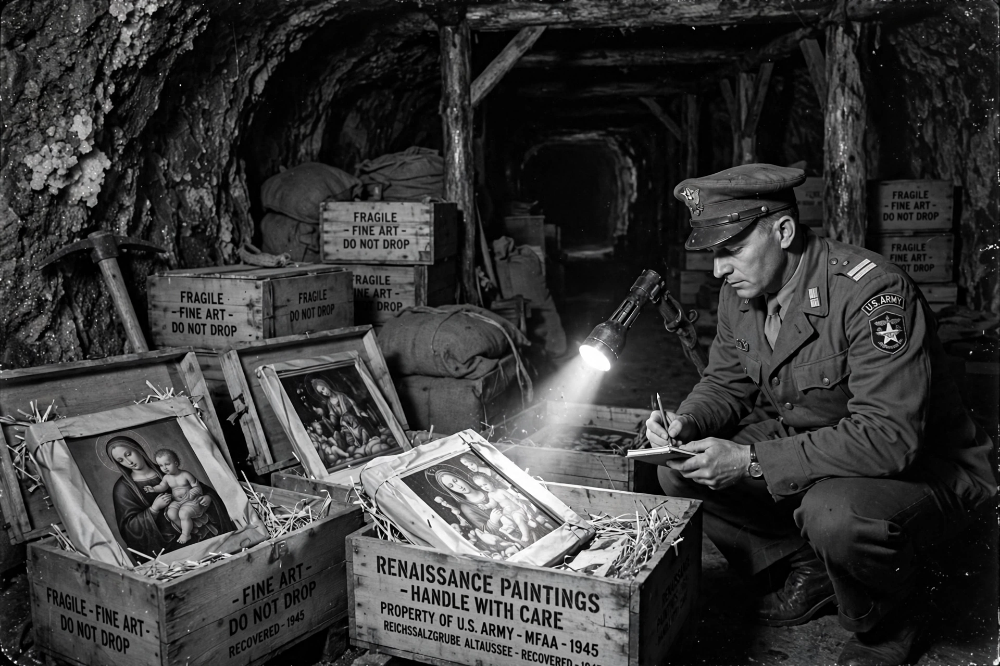

Monuments, Fine Arts, and Archives program
| Monuments, Fine Arts, and Archives Section (MFAA) | |
|---|---|
| Active | 1943 – 1946 |
| Country | United States, United Kingdom (Allied) |
| Role | Protection of cultural property during and after World War II |
| Size | About 345 personnel, from 13 nations |
| Nickname | "The Monuments Men" |

The Monuments, Fine Arts, and Archives Section (MFAA) was a program established in 1943 by the Allied powers during the Second World War to help protect cultural property — monuments, churches, museums, works of art and archives — from damage and looting in war zones, and after the war to find and return art stolen by the Nazis. Its roughly 345 men and women, museum curators, art historians, architects, artists and archivists serving in uniform, are known popularly as the Monuments Men.
Origins
The program grew out of the Roberts Commission, established by President Franklin D. Roosevelt in 1943 on the urging of American museum directors and scholars alarmed by both Allied bombing and the systematic Nazi looting of occupied Europe, much of it organised by the Einsatzstab Reichsleiter Rosenberg. The first Monuments officers landed in Sicily in 1943 and prepared lists and maps of monuments to be spared, then accompanied the armies through Italy, France and Germany.
Recovery of looted art
Following the Allied advance into Germany in 1945, the MFAA uncovered vast repositories of stolen treasure hidden in salt mines, castles and monasteries — including the Altaussee salt mine in Austria, which held masterpieces such as Michelangelo's Bruges Madonna and panels of the Ghent Altarpiece, and the Merkers mine, where gold reserves and paintings were found. Works were catalogued at collecting points, notably the Munich Central Collecting Point and the Offenbach Archival Depot, and millions of objects were restituted to their countries of origin. The search for missing works continues today through the Monuments Men Foundation and successor organisations.
In popular culture
The story of the MFAA was popularised by Robert M. Edsel's 2009 book The Monuments Men and the 2014 film of the same name, directed by and starring George Clooney. Prominent Monuments personnel included James Rorimer, later director of the Metropolitan Museum of Art; Rose Valland, the French curator who secretly tracked Nazi loot from the Jeu de Paume; and Lincoln Kirstein, co-founder of the New York City Ballet.
See also
Nazi plunder · Art repatriation · Einsatzstab Reichsleiter Rosenberg